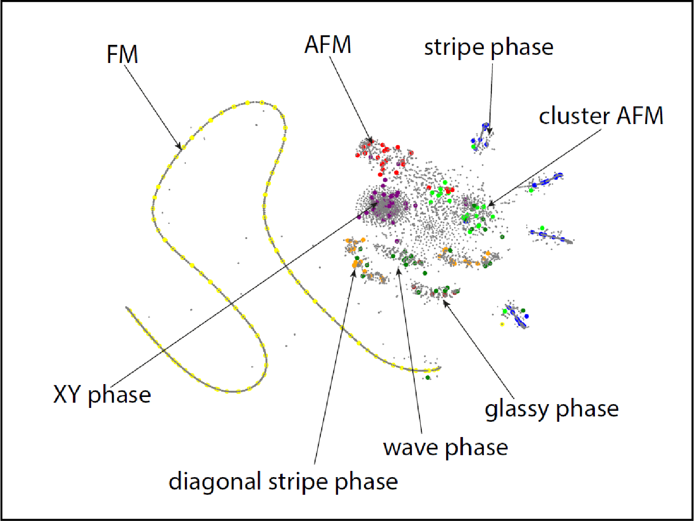
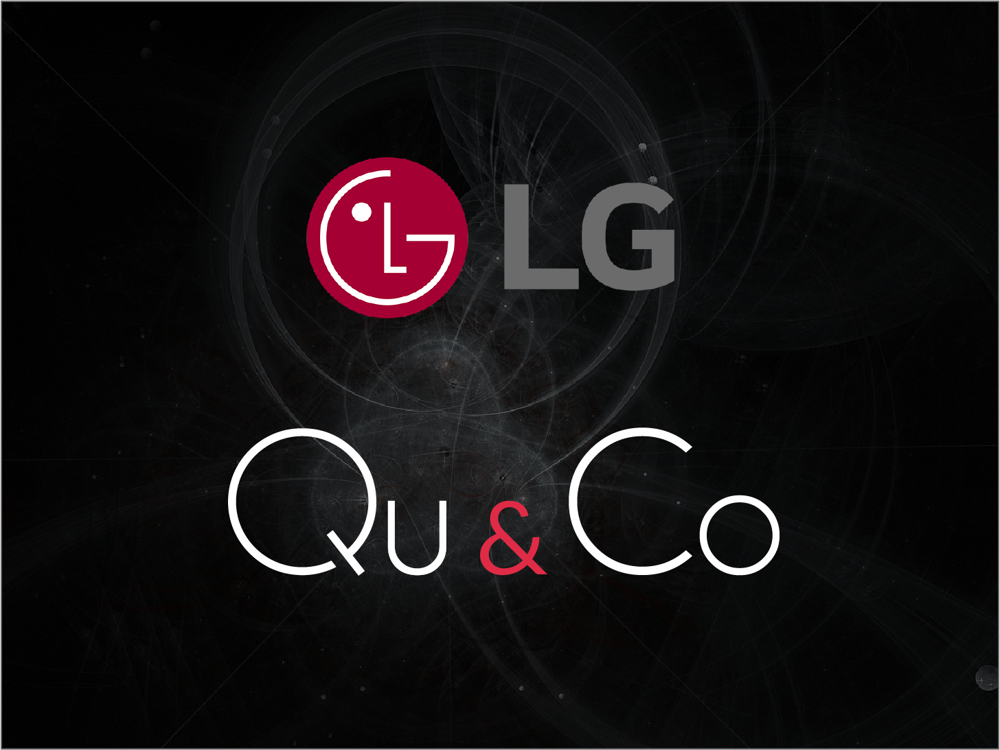
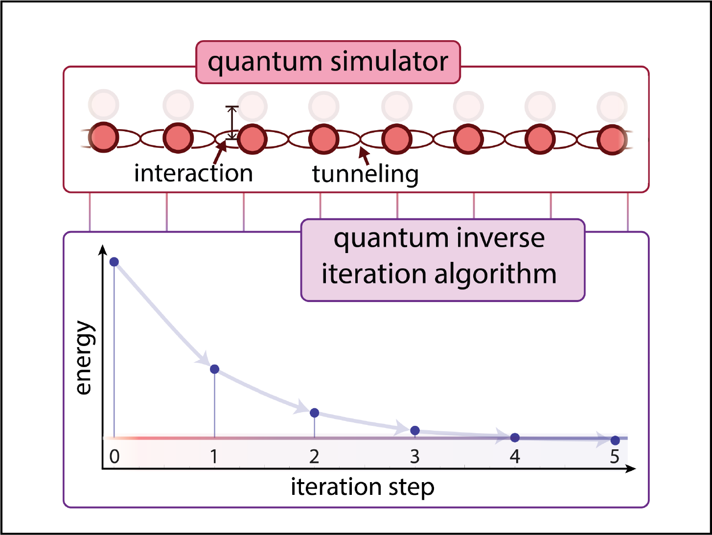

Unsupervised machine learning of nonlinear optical lattices

Our work on detecting phase transitions in polaritonic lattices is now out [arxiv]. Polaritons exhibit rich steady state structure as a function of controllable
parameters, where qualitatively different polarization patterns are observed. We used the data-driven approach to separate polaritonic phases in the unsupervised way.
Specifically, we employed t-SNE to sketch the boundaries of potential phases. From there the potential clusters of phases were conjectured. Next, we used agglomerative clustering to build the phase
diagram. The boundaries between phases were tested by the neural network-based protocol with learnign by confusion. In the future we plan to extend the analysis
to lattices of qubits, non-equlibrium patterns, and explore powerful convolutional neural nets for the analysis.
Talk at CQT, Singapore, by Dr. Oleksandr Kyriienko

22 April, 2021. Centre for Quantum Technologies, NUS, Singapore
Oleksandr has spent part of the PhD in Singapore. On Thursday 22 Apr he returned back, albeit virtually, to present latest research of QuDOS group at the
Quantum Machine Learning seminar. In the talk Oleksandr covered dynamics-based protocols for ground state preration and energy estimation, and presented outlook for
the development of NISQ software with analogue simulators. The video from the talk will appear soon at CQT's YouTube channel.
Developing industrial use-cases for the DQC algorithm.

We are happy to see how our quantum algorithms are entering pipelines of multisimulation industry. The DQC protocol for solving nonlinear differential equations has
laid the foundation for the partnership between LG corporation and Qu&Co (covered in the press release here and discussed in the recent
quantumcomputingreport).
We developed DQC as a part of Qu&Co-sponsored research, and are thrilled that it will be applied to relevant use-cases. DQC serves as bulding block for other algorithms that use expressible quantum circuits and automatic differentiation
for solving complex differential equations in the near term. We are also working to extend it to new scenarios. More to come!
Participation in ICTP's "Conference on Time Crystals".

8 - 10 March 2021, The Abdul Salam International Center for Theoretical Physicis, Trieste, Italy.
The field is continuing to grow fed with new theoretical ideas and experimental works. Main goal of the conference is to bring together the most active groups in the
field to exchange their latest results. Topics that werecovered in the activity devoted to discrete time-crystals, continuous time-translation symmetry breaking,
dissipative time crystals, time-crystals in classical systems, condensed matter physics in time crystals.
Dr. Kyriienko was invited to describe the field of quantum time crystals to the wide audience of reserchers in this emergent area.
He has presented the results on Hamiltonian simulation of continuous time crystals dynamics, and offered the vision on the link between fault-tolerant quantum computing
and time crystalline phase of matter.
Workshop “Useful Quantum Computation For Quantum Chemistry.

22 - 26 February 2021. Lorentz Center, The Netherlands
The aims of the workshop was to bring together fields of quantum computing and quantum chemistry. Determine which classes of problems in chemistry are most promising for quantum-assisted solutions.
Estimate the gap between current state-of-the-art quantum hardware performance and requirements for useful quantum simulations of molecular systems. Further the integration of quantum computers in
quantum chemistry codes, either as embedded subroutines or hybrid quantum-classical schemes.The workshop last for 5 days in total. Together with usual talks, the organisers set up breakout rooms for
important discussion we ought to have (thanks Tom O'Brien, Lucas Visscher and Lorentz Center!). Moderated by Nicholas C. Rubin and Jarrod McClean, the questions were far way from trivial.
New technique to study molecules and materials on quantum simulator discovered

The ground-breaking new technique, by physicist Oleksandr Kyriienko from the University of Exeter,
could pioneer a new pathway towards the next generation of quantum computing.
We propose a quantum inverse iteration algorithm, which can be used to estimate ground state properties of a programmable quantum device. The method relies on the
inverse power iteration technique, where the sequential application of the Hamiltonian inverse to an initial state prepares the approximate ground state. To apply the
inverse Hamiltonian operation, we write it as a sum of unitary evolution operators using the Fourier approximation approach. This allows to reformulate the protocol as
separate measurements for the overlap of initial and propagated wavefunction. The algorithm thus crucially depends on the ability to run Hamiltonian dynamics with an
available quantum device, and can be used for analog quantum simulators. We benchmark the performance using paradigmatic examples of quantum chemistry, corresponding
to molecular hydrogen and beryllium hydride. Finally, we show its use for studying the ground state properties of relevant material science models, which can be simulated
with existing devices, considering an example of the Bose-Hubbard atomic simulator. More information you can find in our [paper]
published in npj Quantum Information
Here you can read an excellent summary written by Duncan Sandes at Phys. Org.
Quantum Time Crystals from Hamiltonians with Long-Range Interactions
Time crystals correspond to a phase of matter where time-translational symmetry (TTS) is broken. Up to date, they are well studied in open quantum systems, where an
external drive allows us to break discrete TTS, ultimately leading to Floquet time crystals. At the same time, genuine time crystals for closed quantum systems are believed
to be impossible. In this study we propose a form of a Hamiltonian for which the unitary dynamics exhibits the time crystalline behavior and breaks continuous TTS.
Find more details in our paper published in Physical Review Letters[paper]
and APS Physics [synopsis]
We have shown that a genuine quantum time crystal behaviour appears for the system with infinite range interactions. The question I've got multiple times:
How do we realize this complex system? As time goes, Dr. Kyriienko is confident that to have time crystallization in a perfectly quantum environment we need a fault-tolerant
quantum computer. The goal is set, now just need to implement it!